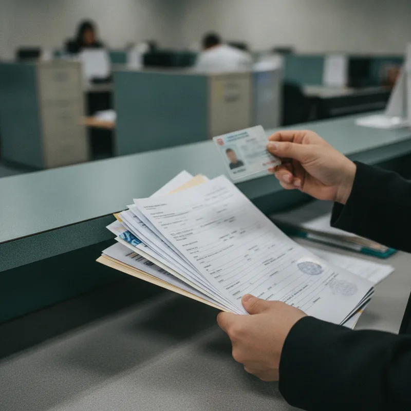
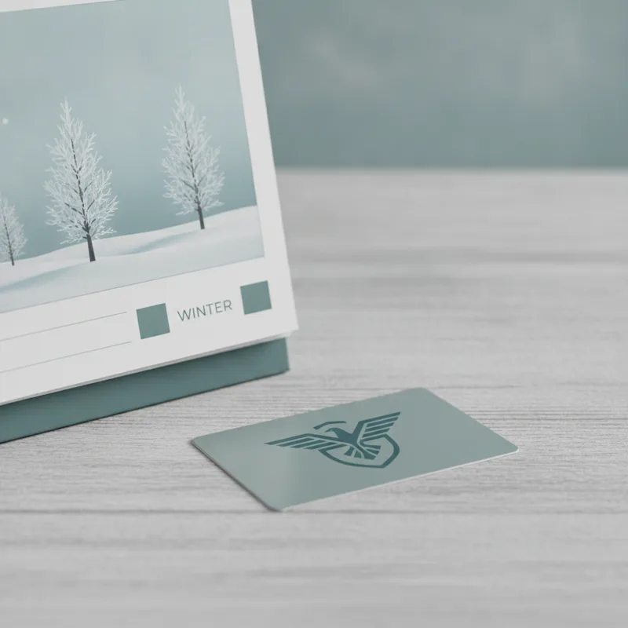

2026년 수급자 난방비 지원금 신청법과 동절기 에너지바우처 활용 가이드
찬 바람이 불기 시작하면 고지서에 찍힐 겨울철 난방비 부담부터 떠오르기 마련입니다. 기후에너지환경부와 한국에너지공단이 운영하는 동절기 에너지바우처 사용이 시작되어 난방비 부담을 낮출 수 있는 지원 제도를 미리 점검해 둘 필요가 있습니다.

올해 동절기 에너지바우처는 요금차감 방식과 실물 카드 방식에 따라 사용 개시일이 다르게 설정되어 있습니다. 신청 기간은 12월 31일까지로 아직 여유가 있는 편이지만, 본인이 지원 대상에 해당하는지 확인하고 필요한 서류를 미리 갖춰 신청하는 과정이 필수적입니다. 지원 조건부터 실제 신청과 잔액 관리까지 단계별로 짚어보겠습니다.
1단계 지원 대상 및 자격 요건 확인하기
에너지바우처 지원을 받으려면 소득 기준과 세대원 특성 기준을 모두 충족해야 합니다. 소득 기준의 경우 국민기초생활 보장법에 따른 생계급여, 의료급여, 주거급여, 교육급여 수급자 중 하나에 해당해야 지원 대상에 이름을 올릴 수 있습니다.
소득 요건을 갖췄더라도 세대원 특성 기준을 함께 만족해야 바우처가 발급됩니다. 수급자 본인 또는 주민등록표 등본상 세대원이 노인, 영유아, 등록장애인, 임산부, 중증·희귀·중증난치질환자, 한부모가족, 소년소녀가정, 다자녀가구 중 하나에 해당할 때 최종 대상자로 선정됩니다.
| 구분 | 주요 자격 요건 |
|---|---|
| 소득 기준 | 기초생활수급자 (생계·의료·주거·교육급여) |
| 세대원 특성 | 노인, 영유아, 장애인, 임산부, 질환자, 한부모, 소년소녀, 다자녀 |
| 제외 대상 | 세대원 모두가 보장시설에서 급여를 받는 경우 |
다만 세대원 모두가 국민기초생활 보장법에 따른 보장시설에서 급여를 받는 경우 지원 대상에서 제외됩니다. 주거 환경이 이미 보장시설 내에서 관리되는 특성을 고려한 규정이므로 신청 전 거주 환경을 먼저 확인하는 것이 좋습니다.
H2 앞 · 직전 광고와 — 간격
2단계 결제 방식과 요금차감 수단 선택하기
신청 단계에서 독자가 자주 망설이는 부분은 실물 카드를 발급받을지, 고지서 자동 차감 방식을 고를지 결정하는 대목입니다. 본인의 주된 난방 에너지원이 무엇인지에 따라 선택 기준이 갈립니다.
전기, 도시가스, 지역난방을 주로 사용하는 가구라면 요금차감 방식을 선택하는 편이 간편합니다. 매달 전달되는 난방비 고지서에서 바우처 금액만큼 자동으로 차감 청구되므로 별도로 카드를 소지하고 결제할 필요가 없습니다. 요금차감 방식의 동절기 에너지바우처 사용 기간은 2026년 10월 1일부터 2027년 5월 31일까지입니다.
반면 등유, LPG, 연탄을 구매하거나 전기와 가스를 현장에서 직접 결제해야 하는 가구는 국민행복카드가 적합합니다. 국민행복카드(실물카드) 방식의 동절기 에너지바우처는 2026년 10월 3일부터 2027년 5월 31일까지 사용이 가능합니다. 주 난방 수단에 맞춰 방식을 고르지 않으면 결제 과정에서 승인이 거절되어 행정복지센터를 다시 방문해야 하는 번거로움이 생기기 쉽습니다.

3단계 온라인 및 행정복지센터 신청 접수하기
2026년 동절기 에너지바우처의 신청 기간은 2026년 6월 15일부터 2026년 12월 31일까지입니다. 신청 방법은 크게 방문 신청과 온라인 신청 두 가지로 나뉩니다.
방문 신청을 진행하려면 주민등록상 거주지 읍·면·동 행정복지센터를 직접 찾으면 됩니다. 본인 또는 대리인이 방문할 수 있으며, 대리 신청 시에는 위임장과 대리인 신분증을 함께 지참해야 합니다. 요금차감 방식을 신청하려는 분은 가장 최근에 전달받은 전기나 도시가스 요금고지서를 챙겨가면 접수가 훨씬 빨라집니다.
온라인 신청은 복지 포털 복지로를 통해 진행할 수 있습니다. 공동인증서나 간편인증으로 로그인한 뒤 복지서비스 신청 메뉴에서 에너지바우처를 선택하고 가구원 정보를 입력하면 접수가 완료됩니다. 전년도 에너지바우처를 지원받았고 올해 자격에 변동이 없는 가구는 별도 신청 없이 자동으로 등록됩니다. 이사를 했거나 세대원 수 등 정보가 변한 가구는 자동 등록 대상에서 제외될 수 있어 관할 센터에 확인을 거치는 편이 안전합니다.
4단계 동절기 바우처 사용 및 잔액 관리하기
신청이 정상적으로 승인되면 선택한 방식에 맞춰 동절기 사용이 진행됩니다. 한국에너지공단 에너지바우처 공식 안내페이지에서 상세 운영 기준을 조회할 수 있습니다.
국민행복카드를 발급받은 경우에는 난방유 판매소나 가스 충전소 등 지정된 가맹점에서 카드를 사용하면 지원금 한도 내에서 결제가 이뤄집니다. 사용 기간 내에 쓰지 못하고 남은 바우처 잔액은 이월되지 않고 소멸되므로, 2027년 5월 31일 사용 마감일 이전에 남은 금액을 모두 소비하는 전략이 필요합니다.
요금차감 방식을 신청한 가구는 고지서 내역에서 에너지바우처 차감 항목을 정기적으로 살펴봐야 합니다. 아파트 거주자의 경우 관리비 고지서에 차감 내역이 표시되며, 차감액이 정상 반영되지 않았다면 관할 에너지 공급업체나 행정복지센터에 문의하여 차감 신청 정보를 확인해야 합니다.
지원금 조건과 세부 운영 기준은 연도별로 개편될 수 있으므로 정확한 안내는 매년 공개되는 공식 공고문을 다시 확인해 두시기 바랍니다.
Q. 작년에 바우처를 받았는데 올해 다시 신청서를 내야 하나요?
전년도 지원 가구 중 자격 요건에 변동이 없고 세대원 구성이 동일한 가구는 별도의 절차 없이 자동 신청됩니다. 다만 이사를 해서 주소지가 바뀌었거나 세대원 수가 변동된 경우에는 거주지 행정복지센터를 방문해 새로 신청하셔야 합니다.
Q. 여름에 다 쓰지 못하고 남은 바우처 금액은 어떻게 되나요?

여름철 하절기 바우처를 사용하고 남은 잔액은 동절기 바우처로 자동 이월되어 난방비 결제에 활용할 수 있습니다. 별도로 이월 신청을 하지 않아도 겨울철 사용 한도에 합산되어 적용됩니다.